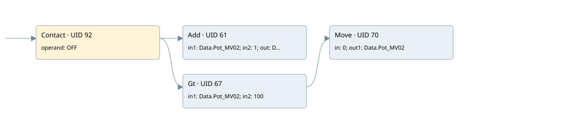

for test trends
cyc_int4 ogni 200ms · 검색 색인 순서 1 · 원본 내부 NID 추정 1
백업 PLF 원본의 2628567 바이트 위치에서 복원한 XML. 검색 문서 396의 객체 키 16102200040f000000000000와 연결했다. 이름 해석 8/8개. 남은 RefId는 상수 또는 미해석 참조다.
연결 구조 다시 그리기
원본 Part/PCon/Wire를 이용한 연결도다. TIA 화면의 래더 배치 또는 실행 결과를 재현한 그림은 아니다. 핀 연결은 아래 표와 원본 XML을 기준으로 읽는다. 노드 위에 마우스를 두면 피연산자 이름을 볼 수 있다.

접점·코일·블록과 피연산자
| Part UID | Gate | Negated 핀 | 연결 피연산자 |
|---|---|---|---|
| 92 | Contact | operand = OFF | |
| 61 | Add | in1 = Data.Pot_MV02; in2 = 1; out = Data.Pot_MV02 | |
| 67 | Gt | in1 = Data.Pot_MV02; in2 = 100 | |
| 70 | Move | in = 0; out1 = Data.Pot_MV02 |
접점 경로를 펼친 조건식
Contact·O/A·비교기의 원본 연결을 읽기 쉽게 펼친 보조 해석이다. POWER는 전원 레일 시작을 뜻한다. 호출 블록·에지·타이머의 내부 동작과 다중 쓰기 순서는 이 표로 실행 검증하지 않았다. 미해석 핀과 RefId는 원문 연결표에서 확인한다.
| UID | 동작 | 대상 | 원본 접점 경로 | 내용 |
|---|---|---|---|---|
| 70 | Move | Data.Pot_MV02 | (OFF AND [Data.Pot_MV02 > 100]) | Move 입력 0 |
원본 배선 연결
| Wire UID | 동일 Wire 연결 끝점 |
|---|---|
| 81 | ORef 73 (OFF) ↔ Part 92.operand |
| 82 | ORef 74 (Data.Pot_MV02) ↔ Part 61.in1 |
| 83 | ORef 75 (1) ↔ Part 61.in2 |
| 84 | Part 61.out ↔ ORef 76 (Data.Pot_MV02) |
| 85 | ORef 77 (Data.Pot_MV02) ↔ Part 67.in1 |
| 86 | ORef 78 (100) ↔ Part 67.in2 |
| 87 | Part 67.out ↔ Part 70.en |
| 89 | ORef 79 (0) ↔ Part 70.in |
| 90 | Part 70.out1 ↔ ORef 80 (Data.Pot_MV02) |
| 93 | Part 92.out ↔ Part 61.en ↔ Part 67.pre |
| 94 | Powerrail {} ↔ Part 92.in |
식별자 해석 근거 8개
| ORef UID | RefId | 이름 | IdentXmlPart 파일 | 해석 방법 |
|---|---|---|---|---|
| 73 | 1 | OFF | 0039-IdentXmlPart.xml | UID/RID + search-text + NID agreement |
| 74 | 5 | Data.Pot_MV02 | 0041-IdentXmlPart.xml | UID/RID + search-text + NID agreement |
| 75 | 6 | 1 | 0042-IdentXmlPart.xml | literal candidate: UID/RID/NID + nearby named declarations + search-text agreement |
| 76 | 5 | Data.Pot_MV02 | 0041-IdentXmlPart.xml | UID/RID + search-text + NID agreement |
| 77 | 5 | Data.Pot_MV02 | 0041-IdentXmlPart.xml | UID/RID + search-text + NID agreement |
| 78 | 7 | 100 | 0042-IdentXmlPart.xml | literal candidate: UID/RID/NID + nearby named declarations + search-text agreement |
| 79 | 9 | 0 | 0042-IdentXmlPart.xml | literal candidate: UID/RID/NID + nearby named declarations + search-text agreement |
| 80 | 5 | Data.Pot_MV02 | 0041-IdentXmlPart.xml | UID/RID + search-text + NID agreement |
검색 코드 보조 자료
참조 명칭을 찾기 위한 자료이며 실행 순서나 AND/OR 관계는 위 연결표로 확인한다.
"off" add "data".pot_mv02 1 "data".pot_mv02 100 move 0 "data".pot_mv02 "data".pot_mv02